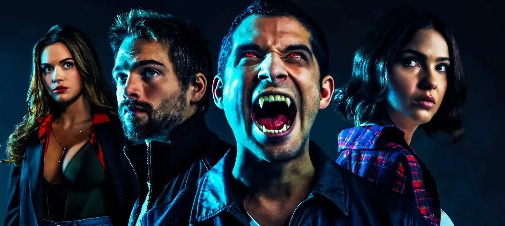

CRIADOR DA SÉRIE : Jeff Davis
Actores: Tyler Posey,Crystal Reed,Dylan O'Brien,Tyler Hoechlin,Holland Roden,Colton Haynes,Shelley Hennig,Linden Ashby,Arden Cho,Dylan Sprayberry,Melissa Ponzio,J. R. Bourne
Resumo De Teen Wolf :clive owen, A série acompanha o adolescente Scott McCall, um jovem asmático, que mora sozinho com a sua mãe desde que seu pai foi embora. Ao lado de seu amigo de infância, o atrapalhado porém muito inteligente Stiles, ele vive os desafios da adolescência e do Ensino Médio. Certa noite, quando os dois exploravam a floresta da até então pacata Beacon Hills, Scott acaba sendo atacado por um lobisomem, que passa a maldição para ele. Agora o adolescente precisa lidar com novos poderes, para que não perca o controle e ponha a vida da sua família e amigos em risco. Ah, uma nova garota na escola desperta profundamente o interesse de Scott. Mas o que fazer quando ele descobre que ela é filha de uma família de caçadores de lobisomens?! Contudo, esta é apenas a plot básica da série. Durante os seis anos em que esteve no ar, Teen Wolf ganhou novas camadas de complexidade a cada episódio, com novas criaturas, novos personagens e subtramas que exploraram desde as relações familiares até assuntos como sacrifício, culpa e outros pontos que já vamos abordar no tópico seguinte. Ah! Praticamente todas as temporadas trazem um mistério, geralmente voltado para a identidade do principal vilão daquele ano. E é mais difícil acertar a resposta do mistério do que pode parecer.
Resumo da Segunda Temporada: A maior parte da segunda temporada se passa ao redor da tentativa do novo Alfa Derek de tentar formar uma alcatéia. A recuperação notável da Lydia do ataque de Peter Hale gera efeitos colaterais incluindo alucinações e períodos de tempo perdido. As esperanças de Jackson de se tornar um lobisomem são destruídas como uma nova criatura aparece e começa a matar os ex-estudantes da escola de Beacon Hills. Scott e Derek fazem uma aliança para lidar com a nova ameaça supernatural. A relação de Scott e Allison é testada primeiro pelos pais dela, proibindo o casal de ficar junto.
Resumo da Terceira Temporada: Primeira Parte - Jackson Withimore se mudou para Londres, a Alcateia de Alfas Chega a Beacon Hills Atrás de Derek e Scott porém terão de enfrentar uma ameaça poderosa o Darach. Segunda Parte - Agora um Alfa Scott terá de enfrentar os Oni e também um Kitsune negro conhecido como Nogitsune que possuiu Stiles.
Resumo da Quarta Temporada: Scott e sua Alcateia vão em busca de Derek no México e descobre que Kate Argent esta viva e não só é uma Nagual como também Sequestrou Derek Hale, ele logo é salvo e então a Alcateia terá que lidar com uma Lista Negra onde suas cabeças estão a premio e lá estão todos os Sobrenaturais de Beacon Hills.
Resumo da Quinta Temporada: A quinta temporada de “Teen Wolf”, assim como a terceira, é bastante sombria. Ela não conta com a presença de Derek, que fez bastante falta. Esse é último ano de Scott, Stiles, Lydia, Malia e Kira na escola e eles planejavam vivê-lo sem muitos problemas sobrenaturais, o que obviamente não ocorreu. Os vilões da parte A da série são os “Dread Doctors”, cientistas que veneravam o sobrenatural e começaram a fazer experimentos com as pessoas e os seres. Eles não podem ser considerados mais humanos. Através de seus experimentos, os “Dread Doctors” transformavam seres humanos normais em chimeras, ou seja, em seres metade humanos de metade diversas criaturas sobrenaturais. Algumas das chimeras são Theo Reaken, Hayden Romero, Corey e Mason Hewitt, personagens importantes e frequentes na série. Theo é um dos grandes antagonistas da quinta temporada e o responsável pela morte de Scott no episódio final na parte A (Melissa, ao ver o filho morto, se desespera e, através de primeiros socorros, faz o filho voltar a vida). Ele engana Scott e sua alcateia – com exceção de Stiles – e faz com que eles se separem, fiquem desunidos. O final da parte A também conta com o xerife Stilinski quase morrendo, em uma condição grave, nos braços de Stiles.
Resumo da Sexta Temporada: Scott e sua matilha enfrentaram duas ameaças. Os caçadores de Gerard e Monroe, e um monstro conhecido como Anuk-Ite que transformava as pessoas em pedra com um olhar. No confronto final de Scott com o demônio aspirante a Medusa, ele se lembrou de todos os vilões que enfrentou antes. Também servindo como um olhar sentimental sobre a história da série.
Data De Lançamento:5 de junho de 2011
TEEN WOLF e um thriller de ação sobrenatural Tyler Posey com Papel de Scott McCall;
Resumo Do Filme Um mal terrível surge, e os lobos uivam mais uma vez. Apenas um lobisomem como Scott McCall pode reunir novos aliados e reunir amigos de confiança para lutar contra o que poderia ser o inimigo mais poderoso e mortal que já enfrentaram.
Data De Lançamento Do Filme 26 de janeiro de 2023
A trama de Teen Wolf teve como inspiração o filme homônimo de 1985, que teve Michael J. Fox (De Volta para o Futuro) no papel de um adolescente que precisava lidar com os desafios do Ensino Médio e o fato de ter se transformado em um lobisomem. Contudo, apenas a ideia básica do filme foi adaptada na série.